أعطني الإنترنت من فضلك
تم تصميم الكمبيوتر المحمول XO للإشتغال على شبكة لاسلكية ، حتى يتمكن من العمل بشكل جيد في الدول النامية ، حيث أنه أسرع وأقل تكلفة تقديم وصلات لاسلكية بدل الشبكات السلكية.مصممة XOs للاتصال XOs اخرى وذلك باستخدام شبكة متداخلة. شبكة متداخلة يسمح أجهزة الكمبيوتر المحمولة اكس القريبة لاجراء محادثات مع بعضهم البعض مباشرة (لاسلكيا) من دون الحاجة إلى موفر خدمة إنترنت التقليدية (مقدمي خدمات الانترنت).
اكس وتدعم أيضا اتصالات لاسلكية للاتصال بالإنترنت مباشرة. التعاون مع الآخرين في أنشطة لا تتطلب الاتصال بالإنترنت..
هناك طرق مختلفة للاتصال بالإنترنت:
- باستخدام نقطة الوصول اللاسلكية مثل واي فاي الساخنة في مكتبة أو مقهى ، أو موقع يحتوي على جهاز التوجيه اللاسلكي مثل بيتك.
- uاستخدام "جهاز خادم بالمدرسة" التي قدمها النظام المدرسي الخاص.
- استخدام كابل USB إلى Ethernet او وصلة الى مودم الكابل أو مودم DSL، أو شبكة محلية ، مثل تلك التي عرضت في المنزل أو مكان العمل.
قبل الاتصال
إذا كنت ستتصل من المنزل، تحقق مع مزود خدمة الانترنت الخاص بك لمعرفة ما إذا كانت شبكة الاتصال محمية بكلمة مرور. جهاز التوجيه الخاص بك أيضا لديه كلمة السر التي يمكن العثور عليها في والوثائق. قم بمعرفة إعدادات جهاز التوجيه اللاسلكي بحيث يمكنك معرفة مشاكل الاتصال عند الحاجة. الفصل اكتشاف المشاكل يقدم بعض المساعدة.تحقق من حالة الاتصال الحالية على النحو المبين في الجزء الأسفل من الإطار. في حالة توصيل بنجاح في الماضي ، جهاز XO "يتذكر" الاتصال وسيربط مرة أخرى في المستقبل.
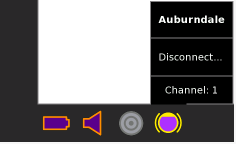
قم بمعرفة اسم الشبكة وكلمة السر، إذا تم تأمين بكلمة السر. XO يشير إلى هذا بعلامة مفتاح.
الاتصال بالشبكة
- 1. انتقل إلى عرض الجوار.
- 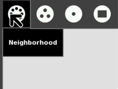
- 2. في حقل البحث، أدخل اسم الشبكة التي تريد الاتصال بها.
- 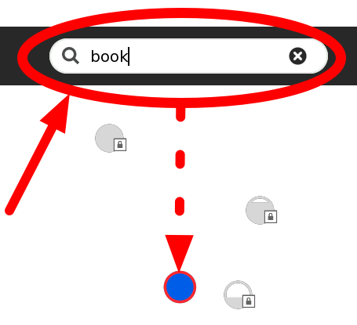
أو ضع المؤشر فوق أحد الدوائر للوصول إلى الشبكة حتى يتم التعرف على اسم الشبكة اللاسلكية..
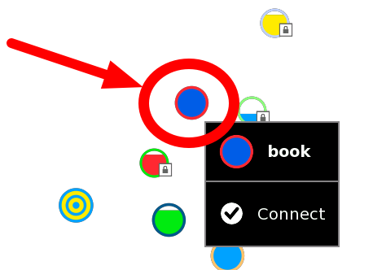 - 3. قم بالاتصال بالنقر على مركز الدائرة.
وتتمثل نقطة وصول لاسلكية من الدوائر. مستوى ملء يشير قوة الإشارة.- 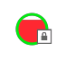
- نقاط الوصول التي تتطلب مفاتيح لديها "قفل" رمز.
- نقاط الوصول التي يتم التوصيل بنجاح تصبح "المفضلة" كما هو مبين من خلال رمز النجمة..
-
- مركز دائرة يومض في حين أن الكمبيوتر المحمول هو محاولة الاتصال واثنين من منحنيات تحيط الدائرة.
- يشار إلى نقطة الوصول التي تمثل شبكة متداخلة مع رمز الهدف ، مع واحد لقناة 1 ، واحد لقناة (6) ، وواحدة للقناة 11..
- 4. أدخل المفتاح الاسلكي إذا طلب منك.. 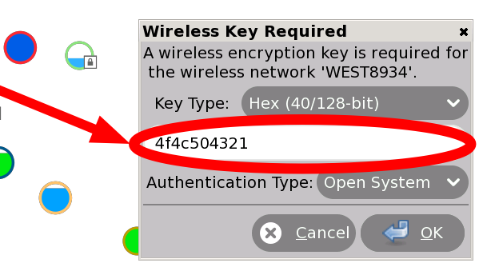
- .
إعادة المحاولة إذا لزم الأمر
عند فشل محاولة الاتصال ، وتوقف عن دائرة الوميض ، ولكن رمز نقطة الوصول لا يظهر في الإطار. أنقر على الدائرة في عرض الجوار للمحاولة مرة أخرى، فإنه يحتاج في بعض الأحيان الى 2 او 3 محاولات قبل الاتصال.
إذا كنت لا تستطيع رؤية نقطة الوصول مع الاسم الذي تعرفه ، قد يكون هوائي لاسلكي بعيدا، أو نقطة الوصول قد لا يعمل بشكل صحيح. لمزيد من المعلومات ، أو إذا كان لديك صعوبات في الحصول على اتصال الشبكة ، تشير إلى الفصل استكشاف الأخطاء وإصلاحها.
قطع الاتصال
لقطع الاتصال من الشبكة، ضع المؤشر فوق نقطة الوصول وانقر فوق قطع الاتصال في القائمة.
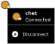
بدء نشاط التصفح
عندما يتصل جهازك بالشبكة، يمكنك العودة مرة أخرى إلى عرض الصفحة الرئيسية وبدء نشاط تصفح.
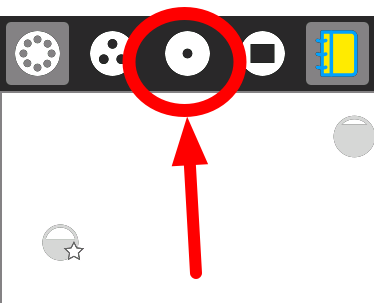
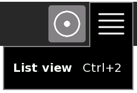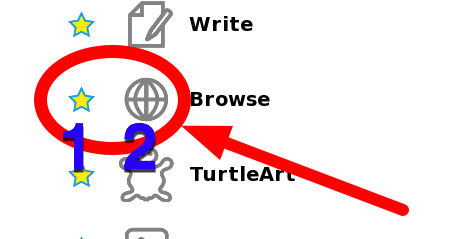
- إذا لم تقم بأضافة بعد نشاط التصفح الى المفضلة لديك، انقر فوق القائمة (على اليسار) وانتقل إلى أيقونة المتصفح. أضف النشاط إلى قائمة المفضلة لديك عن طريق النقر على النجمة الموجودة قرب الأيقونة (1). إطلق المتصفح للمرة الأولى بالنقر على أيقونة الكرة الأرضية (2). في المرة القادمة، يمكنك استخدام شاشة البدء لإطلاقه (كما هو مبين في الفقرة التالية).
- إذا كنت متصلا بإنترنت ،لا يمكن للكمبيوتر المحمول أن يتصل بالشبكة mesh، وإذا كان متصلا بشبكة mesh ، فلا يمكنه الاتصال في نفس الوقت لاسلكيا إلى الإنترنت.
- أنقر على أيقونة الكرة الأرضية لتشغيل نشاط التصفح.
- إذا لم يتمكن الجهاز من العثور على شبكة الإنترنت متاحة بعد خمس دقائق من البحث ، فإنه يتصل إلى شبكة متداخلة 1 ، والتي تمكن الكمبيوتر المحمول من الاتصال باجهزة الكمبيوتر المحمولة الأخرى القريبة..
- يرجى التحلي بالصبر ، يمكن أن تتخذ تصل المدة الى دقيقة للعثور على شبكات مرئية جديدة.
- في بعض الأحيان سوف يطلب منك إدخال "مفتاح لاسلكي" مرة أخرى. أدخل مرة أخرى وكرر العملية حتى يتم الإتصال.
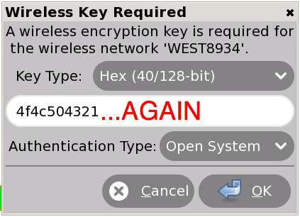 - لمزيد من المعلومات حول الاتصال ، يرجى الاطلاع على الأسئلة المتكررة على الموقع الدعم.
Author : GiveMeTheInternet
© Anne Gentle 2008
Modifications:
Brian Jordan 2008
Caryl Bigenho 2008
A Holt 2008
Janet Swisher 2008
Sandy Culver 2008
S Page 2008
Tom Boyle 2008
License : General Public License
Produced in FLOSS Manuals